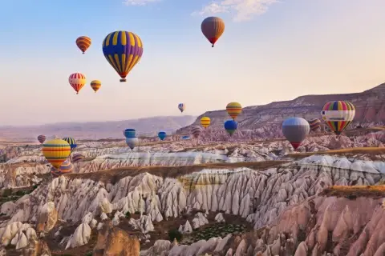

Son Dakika Haberleri, En Güncel Gündem Haberleri ve Flaş Gelişmeler
TÜRKİYE EKONOMİSİNDE REKOR BÜYÜME
Türkiye ekonomisi, 2024 yılının ilk çeyreğinde %7,5 büyüme kaydetti. Bu büyüme oranı, son 10 yılın en
yüksek seviyesi olarak dikkat çekiyor. Hükümetin uyguladığı ekonomik reformlar ve teşvik paketleri,
büyümeye olumlu katkı sağladı. Özellikle ihracat ve sanayi üretimindeki artış, ekonominin lokomotifi
oldu. Uzmanlar, bu büyüme trendinin yıl boyunca devam etmesini bekliyor.
Ayrıca, tüketici güven endeksindeki yükseliş ve istihdamdaki artış da ekonomik iyileşmenin
göstergeleri arasında yer alıyor. Hükümet, önümüzdeki dönemde yatırımları artırarak sürdürülebilir
büyümeyi hedefliyor. Ekonomistler, Türkiye'nin küresel ekonomik konjonktürde daha güçlü bir pozisyona
gelmesi için yapısal reformların devam etmesi gerektiğini vurguluyor.
Öte yandan, enflasyon oranlarının kontrol altına alınması ve dış ticaret açığının azaltılması da
ekonomik istikrar için kritik öneme sahip. Hükümet, bu alanlarda da çeşitli politikalar geliştiriyor.
Yatırımcılar ve iş dünyası temsilcileri, Türkiye ekonomisinin geleceği konusunda iyimser görüşler
paylaşıyor.
Sonuç olarak, Türkiye ekonomisi 2024 yılında güçlü bir performans sergiliyor ve bu trendin devam
etmesi bekleniyor. Hükümetin reform odaklı yaklaşımı ve ekonomik teşvikleri, büyüme potansiyelini
artırıyor. Ekonomistler, Türkiye'nin bölgesel ve küresel ekonomide daha etkin bir rol oynaması için
gerekli adımların atılmasının önemine dikkat çekiyor.
Haberin devamı...
TURİZM SEKTÖRÜNDE REKOR BEKLENTİSİ

Türkiye'nin turizm sektörü, 2024 yılında rekor kırmayı hedefliyor. Özellikle kültür ve doğa turizmi
alanlarında önemli yatırımlar yapılıyor. Ayrıca, sağlık turizmi de hızla büyüyor. Yeni otel projeleri
ve turistik destinasyonlar geliştiriliyor. Turizmde dijital pazarlama stratejileri ön planda
tutuluyor. 2024 yılında Türkiye'ye gelen turist sayısında %15 artış bekleniyor.
Turizm sektörü temsilcileri, pandemi sonrası toparlanmanın hızlandığını ve uluslararası turistlerin
Türkiye'ye olan ilgisinin arttığını belirtiyor. Hükümetin turizmi destekleyici politikaları ve altyapı
yatırımları da sektöre olumlu yansıyor. Ayrıca, kültürel etkinlikler ve festivallerle turizm sezonunun
uzatılması hedefleniyor.
Öte yandan, sürdürülebilir turizm uygulamalarına da önem veriliyor. Çevre dostu oteller ve ekoturizm
projeleri geliştiriliyor. Turizmde kaliteyi artırmak için hizmet standartları yükseltiliyor. Sektörün
geleceği için dijital dönüşüm de öncelikli konular arasında yer alıyor.
Sonuç olarak, Türkiye turizm sektörü 2024 yılında güçlü bir performans sergilemeyi hedefliyor.
Yatırımlar, pazarlama stratejileri ve sürdürülebilirlik odaklı yaklaşımlar, sektörün büyümesini
destekliyor.
Haberin devamı...
RONADLO NASIL BU KADAR ÜNLÜ OLDU ?
Cristiano Ronaldo, 5 Şubat 1985'te Portekiz'in Madeira adasında doğdu. Futbola Sporting Lizbon'da
başladıktan sonra Manchester United'a transfer oldu ve burada büyük başarılar elde etti. 2009 yılında
rekor bir transfer ücretiyle Real Madrid'e geçti ve burada da sayısız rekor kırdı. 2018'de Juventus'a
transfer olan Ronaldo, ardından Manchester United'a geri döndü. 2021'de Al Nassr takımına katıldı.
Ronaldo, kariyeri boyunca 5 Ballon d'Or kazandı ve UEFA Şampiyonlar Ligi'ni 5 kez kazandı. Portekiz
milli takımıyla da büyük başarılar elde etti, 2016 Avrupa Şampiyonası ve 2019 UEFA Uluslar Ligi'ni
kazandı. Ronaldo, futbol tarihinin en golcü oyuncularından biri olarak kabul ediliyor.
Ayrıca, Ronaldo'nun saha dışındaki hayırseverlik çalışmaları ve iş girişimleri de dikkat çekiyor.
Kendi adını taşıyan markalar ve sosyal sorumluluk projeleriyle de tanınıyor. Ronaldo, dünya genelinde
milyonlarca hayranı bulunan bir spor ikonudur.
Sonuç olarak, Cristiano Ronaldo futbol kariyeri boyunca elde ettiği başarılar ve saha dışındaki
etkisiyle dünya çapında tanınan bir figür haline gelmiştir.
Haberin devamı...
ELON MUSK KİMDİR ?
Elon Musk, 28 Haziran 1971'de Güney Afrika'nın Pretoria şehrinde doğdu. İlk olarak Zip2 adlı yazılım
şirketini kurdu ve daha sonra PayPal'ın kurulmasına öncülük etti. SpaceX'i kurarak uzay
taşımacılığında devrim yarattı ve Tesla Motors ile elektrikli araç endüstrisinde lider konuma geldi.
Ayrıca, SolarCity, Neuralink ve The Boring Company gibi birçok yenilikçi girişimin de arkasındaki
isimdir.
Musk, Mars'ı kolonileştirme vizyonuyla SpaceX'in Starship projesini başlattı ve sürdürülebilir enerji
çözümleri için Tesla'nın güneş enerjisi ve batarya teknolojilerine yatırım yaptı. Ayrıca, yapay zeka
ve beyin-bilgisayar arayüzleri üzerine çalışmalar yapan Neuralink ile insan beynini bilgisayarlarla
entegre etmeyi hedefliyor.
Elon Musk, teknoloji ve inovasyon alanındaki katkılarıyla dünya çapında tanınan bir figürdür. Vizyoner
liderliği ve cesur projeleriyle geleceğin şekillenmesinde önemli bir rol oynamaktadır.
Haberin devamı...